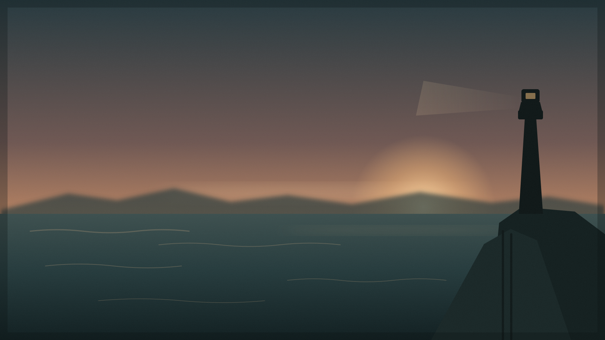
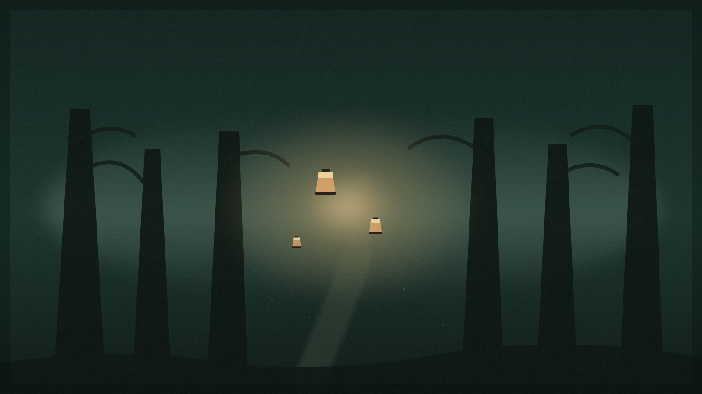
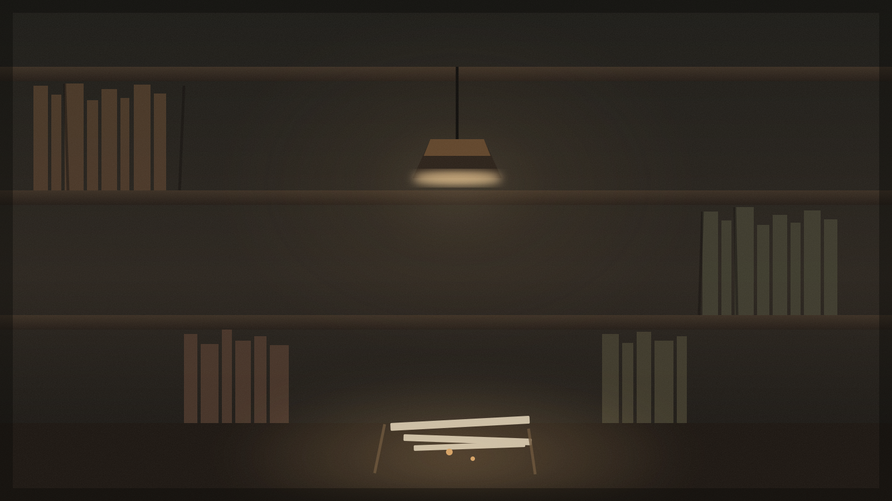

Pesisir Utara
Aktif · Misteri · Kemarin

Dermaga tua · Kabut pagi · Giliran 12
Aktif · Misteri · Kemarin

Siap · Fantasi · 2 jam lalu

Draft · Drama · 3 hari lalu
Kabut turun rendah. Di balik tirai putih itu, lonceng berbunyi sekali—pelan, seolah seseorang sedang menguji apakah dunia masih mendengarkan.
“Kau juga mendengarnya?” tanya Mara.
Fworld menyimpan dunia dan sesi ini di perangkatmu.